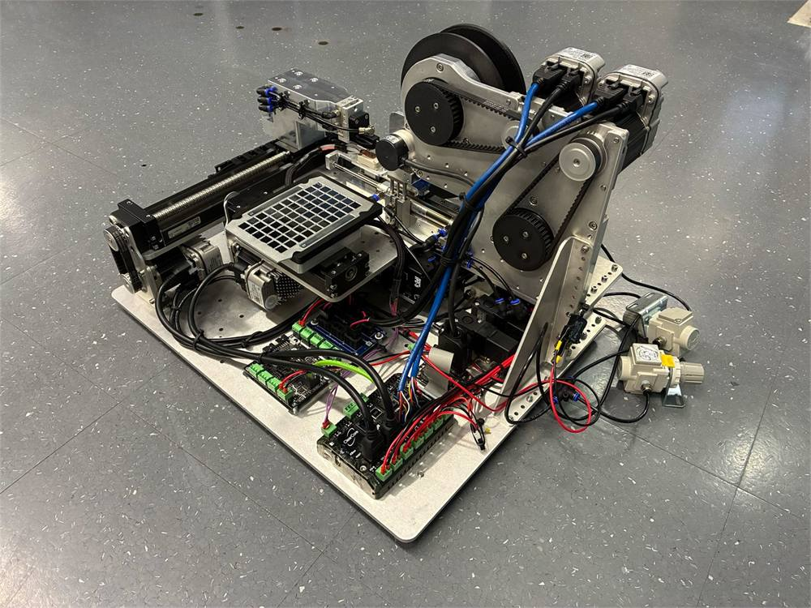
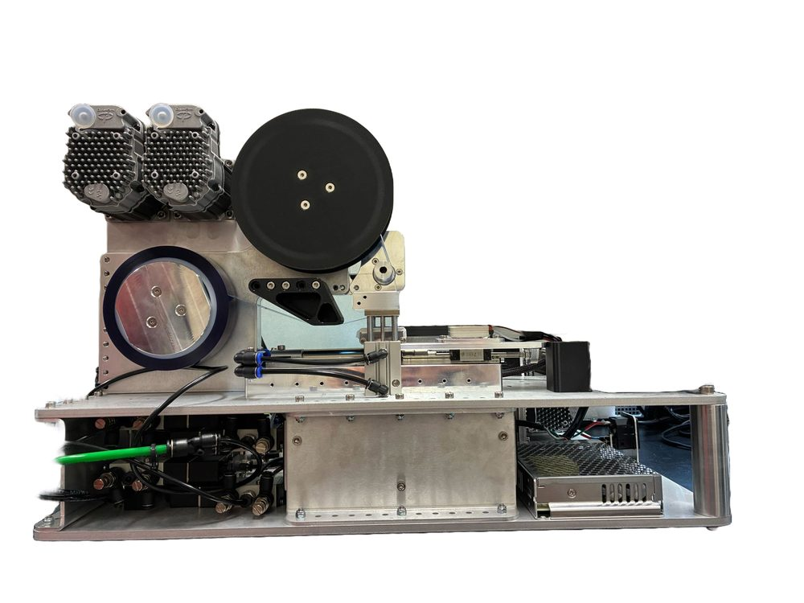
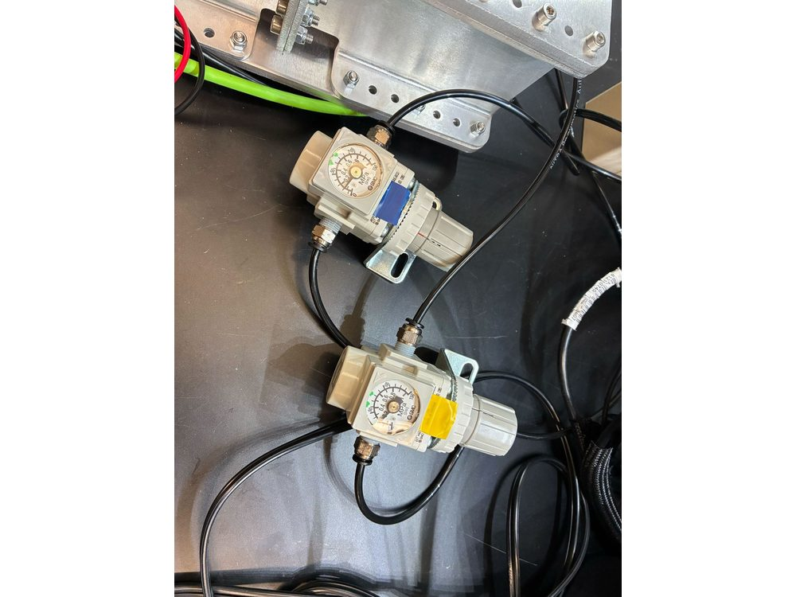
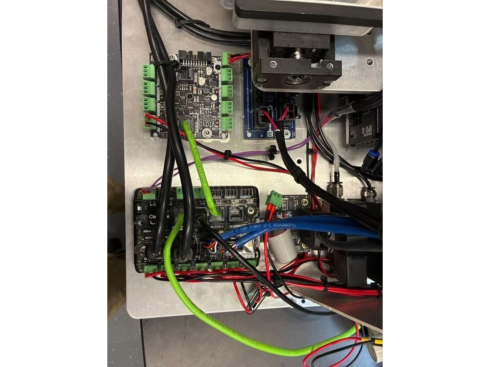
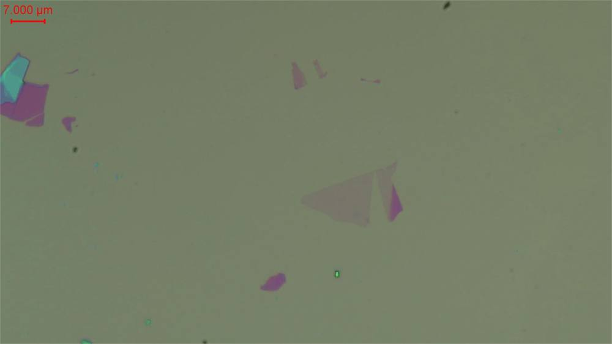

Automated 2D-Material Exfoliator
Automated system for producing monolayer flakes of graphene and other van der Waals materials for 2D-device research.
Project Scope
- Designed the complete mechanical system.
- Completed assembly and approximately 70% of the wiring.
- Built the machine around compact industrial linear motion, pneumatic actuators, vacuum handling, and a heated sample stage.
- Included fasteners, wire paths, assembly details, and service access in the CAD.





Controls and Process Development
- Used Teknic ClearCore and ClearPath hardware for motion control, with a C++ state machine for the exfoliation sequence.
- Controlled actuator force with air pressure and actuator speed with exhaust flow valves; separate solenoids control vacuum pickup.
- Implemented thermistor feedback and PID temperature control for the heated sample stage.
- Developed a tape guide and calibration process to reduce chip movement and lifting during tape removal.
- The machine connects to a ScopeFoundry interface for setting up runs, checking status, and recording results.